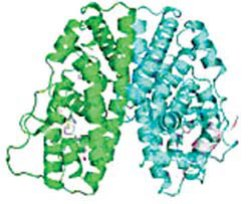
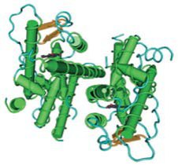
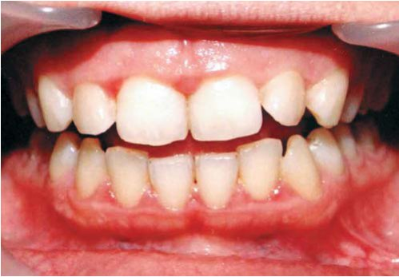
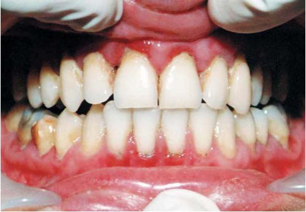
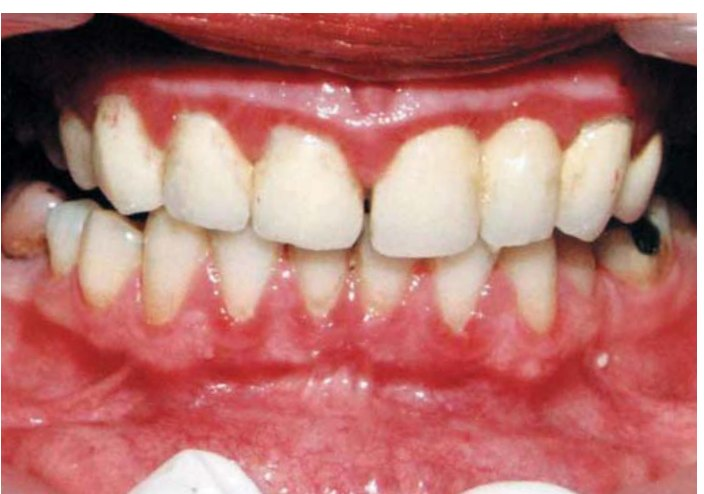
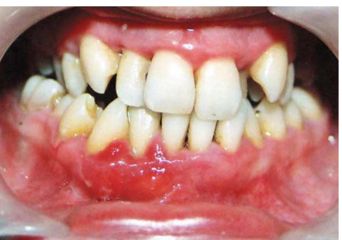

Огляди · журнал «ДентАрт» 2013 №3 (72)
Гінгівіт вагітних
PREGNANCY GINGIVITIS
Здоров'я рота — невід'ємна частина загального здоров'я жінки, і ставлення до нього має бути дуже серйозним, особливо під час вагітності, оскільки зміна гормонального фону впливає не лише на репродуктивну систему, але й на слизову оболонку і тканини пародонту.
Основні статеві гормони, що впливають на пародонт і слизову оболонку рота, — це естроген і прогестерон. Вони регулюють ріст клітин, диференціацію і функцію репродуктивних тканин.
Естрогени виділяються яєчниками і стимулюють ріст фолікул, їх концентрація домінує в проліфераційній фазі менструального циклу (1-13 дні циклу, фолікулярна фаза), після овуляції (15-18 дні циклу) в лутеїновій або секреторній фазі жовте тіло починає виділяти прогестерон. У разі настання вагітності хоріонічний гонадотропін людини (Human Chorionic Gonadotropin — HCG) підтримує існування жовтого тіла доти, доки плацента не почне виробляти прогестерон. Обидва гормони мають значний біологічний вплив на різні системи, зокрема й порожнину рота (Оджанотко-Харрі/Ojänotko-Harri і співавт., 1991, Маріотт/ Mariott, 1994). Естрогени поділяються на три типи. В основному в жіночому організмі натурально продукується естрон (переважає в період постменопаузи), естрадіол — первинний естроген з менарха до менопаузи, а естріол виробляється плацентою у період вагітності.
Домінуючим естрогеном вважається естрадіол, який контролює репродуктивну функцію, диференціацію деяких тканин і органів, у тому числі кісткової тканини і пародонту (Холлін/Hollin, 1997; Маріотт/Mariott, 1994). Імуногістохімічними дослідженнями було доведено, що зміни в тканинах відбуваються за допомогою рецепторів, які були виявлені у великій кількості і в порожнині рота.
Існує два субтипи естрогенних рецепторів ER-α і ER-β (фото 1, 2). У порожнині рота були виявлені тільки рецептори типу ER-β на слизовій оболонці, в ясенних епітеліальних клітинах (регулюють дозрівання епітелію), а також у гландулярних епітеліальних клітинах слинових залоз (Лейні/Laine і співавт., 1993; Озоні/Ozoni і співавт., 1992; Валімаа/Valimaa і співавт., 2004). Рецептори також було виявлено в клітинах сполучної тканини (у фібробластах та ендотеліальних клітинах).


На відміну від м'яких тканин і слинових залоз рота, у височнонижньощелепному суглобі виявлено естрогенні рецептори типу ER-α (Пурі/Puri і співавт., 2009).
Естрогени регулюють експресію остеобластів у клітинах пародонту і активно впливають на остеогенну диференціацію клітин періодонтальних зв'язок як у чоловіків, так і в жінок (Тус/Thus, Танг/Tang і співавт., 2008). Естроген також зменшує синтез преколагена I у фібробластах циркулярної зв'язки, розташованих вестибулярно (Джу Д./Ju D. і співавт., 2001).
Слизова оболонка рота і тканини пародонту добре васкуляризовані, що обумовлює високий рівень гормонального забезпечення. Виявлення естрогенних рецепторів засвідчує важливу роль цих гормонів у дозріванні епітелію слизової оболонки рота і кісткової тканини.
Відомо також, що слизова оболонка може зв'язувати прогестерон, але точна локалізація прогестеронных рецепторів не встановлена (Віхек/Vihek і співавт., 1992). Прогестерон зменшує швидкість руху кров'яних клітин, сприяючи нагромадженню гранулоцитів, і збільшує проникність судин. Прогестерон також стимулює вироблення медіаторів запалення, простагландину PG2, тим самим збільшуючи концентрацію поліморфоядерних лейкоцитів в ясенній борозні. Він також на 50% зменшує синтез інтерлейкіну-6, що знижує резистентність ясен до бактерійних продуктів. На відміну від естрогенів, прямого впливу прогестерону на клітини періодонтальних зв'язок не встановлено, але він сприяє підтриманню запального процесу описаними вище властивостями.
Статеві гормони також підвищують метаболізм фолієвої кислоти (вітамін B9) у слизовій оболонці рота (Томсон І. /Thomson E. і співавт., 1982). Оскільки фолієва кислота необхідна для збереження тканин, збільшення метаболізму може вичерпати її запаси і тим самим інгібувати відновлення або регенерацію тканин пародонту та слизової оболонки рота (Мілей/Mealay і співавт., 2003).
Статеві гормони замінюють для деяких мікроорганізмів, наприклад Prevotella intermedia, вітамін К, найважливіший для них чинник росту, тим самим сприяючи збільшенню їх чисельності (Накагава С. /Nakagawa S. і співавт., 1994; Корммен / Kormman і співавт., 1982).
Також слід зазначити, що кількість ясенної рідини в ясенній борозні збільшується приблизно на 20% під час овуляції (у 75% здорових жінок), тоді як у секреторній фазі менструального циклу ексудація ясенної рідини зменшена. Встановлено, що під час вагітності неорганічна і білкова складова слини помітно зменшується, знижуючи буферну місткість (Лейні/Laine і Пеніхакенен/Pienihakkienen, 2000).
Вагітність супроводжується серйозними ендокринними змінами. До кінця третього триместру концентрація прогестерону і естрогену збільшена в 10 і 30 разів відповідно у порівнянні з менструальним циклом. Сприйнятливість до інфекцій підвищена на початковій стадії гестаційного періоду за рахунок змін в імунній системі: супресії активності Т-клітин, зменшення хемотаксису нейтрофілів і фагоцитозу, зменшення вироблення антитіл, зміни лімфоцитарної відповіді. Такий імунотолерантний стан обумовлений захистом плоду від материнської імунної системи для запобігання відторгненню.
Підвищений вміст прогестерону в сироватці збільшує кількість ясенної рідини, змінюючи тим самим стан під'ясенної мікрофлори, збільшуючи рівень виду Porphyromonas. Як сказано вище, естрадіол і прогестерон вибірково акумулюються Praеvotella intermedia як замінник вітаміну К, що зумовлює зміни співвідношення Bacteriodes melaninogenicus і Praevotella intermedia та aнаеробно-аеробне співвідношення під'ясенних бактерій. Надмірно швидкий ріст червоних і помаранчевих комплексів Socransky сприяє зростанню поширеності гінгівіту і обтяжує перебіг пародонтиту під час вагітності. Існують дані, що деякі пародонтопатогени можуть обминути плацентарний бар'єр і викликати інфекцію оболонок плоду. Поширеність P. intermedia істотно вища у недоношених новонароджених у порівнянні з доношеними. Серопозитивність ембріональних антитіл до P. intermedia у вигляді індексу імуноглобуліну М у пуповинній крові припускає in utero експозицію плоду вищезгаданими бактеріями або продуктами їх життєдіяльності.
Fusobacterium nucleatum — одна з бактерій, що найчастіше зустрічаються при гінгівіті і дуже часто культивується з амніотичної рідини вагітних жінок з неушкодженими плацентарними мембранами, але з передчасними пологами.
При підвищенні рівня естрадіолу і прогестерону під час вагітності спостерігається збільшення синтезу PG-2. Існує гіпотеза, що жінки, котрі страждають захворюваннями пародонту, можуть народити недоношених дітей або немовлят з дефіцитом ваги, також може бути ризик виникнення преклампсії. Захворювання пародонту є джерелом поширення бактерій і продуктів їх життєдіяльності, які, потрапляючи в системну циркуляцію, досягають амніотичної порожнини й активізують каскад параметрів запалення, що викликають початок пологів.
Є дані, що у жінок, яким було проведено курс пародонтологічного лікування до 28-го тижня вагітності, значно менше випадків передчасних пологів, ніж у жінок без пародонтологічного лікування.
Стероїдні гормони, виявлені в слині, відображають концентрацію вільно циркулюючих (не пов'язаних з протеїнами) гормонів у крові (Гофман/Hofman, 2001). Гормони через ендотелії і гландулярний епітелій потрапляють у слину (Грьоші/Gröshi, 2009) і є важливим клінічним маркером, наприклад, кортизолу (для виявлення гіперсекреції внутрішнього кортизолу), естрадіолу Е2 (для запобігання недоношеності, тест затверджений FDA), також прогестерону (Віріндж/Viring, 1986; Тівіс/ Tivis і співавт., 2005).
Поширеність гінгівіту у вагітних жінок варіює від 30% до 75%. Протягом усього періоду вагітності перебіг гінгівіту обтяжений незалежно від кількості нальоту (бляшки) (фото 3). Приблизно в однієї з двох жінок раніше існуючий гінгівіт загострюється при настанні вагітності (фото 4). Гінгівіт більше виражений з другого місяця гестації і досягає максимального рівня до восьмого місяця. Клінічна симптоматика не відрізняється від гінгівіту, викликаного мікробним нальотом, але помітна тенденція до більш вираженого запалення. Збільшення концентрації гормонів посилює синтез гіалуронової кислоти і комплексів глікозаміногліканів, що осмотично індукує набряклість і гіпертрофію ясенної тканини — клінічно висловлючись, тяжчі форми запалення. Вважається, що неоваскуляризація пародонту (тканини ясен) відбиває стан матки під час вагітності, тобто при гормональній атаці (фото 5).


Клінічно при гінгівіті вагітних виявляється кровоточивість ясен, підвищення виділення ясенної рідини, набряк, збільшення глибини кишень при існуючому пародонтиті. У 10% жінок під час вагітності спостерігається епуліс (фото 6), який з'являється у відповідь на хронічне подразнення, найчастіше під'ясенними зубними відкладеннями, і виникає з вестибулярного боку. Це безболісна червона гранулема, що кровоточить, з маленькими фібринозними цятками на поверхні, може бути на ніжці або без неї, найчастіше до 2 см діаметром. Після вагітності її видаляють хірургічним шляхом. При неповному видаленні або хірургічному втручанні під час вагітності може з'явитися рецидив.


Висновок
Спираючись на безліч переконливих доказів того, що стан тканин пародонту має істотний вплив на загальне здоров'я, Американська академія пародонтології (ААР) розробила рекомендацію: усі вагітні жінки або жінки, які планують вагітність, повинні пройти пародонтологічне обстеження і в разі потреби — профілактичні і/або лікувальні процедури.
На завершення зазначимо, що жіночі статеві гормони самі по собі не викликають захворювань пародонту і слизової оболонки рота. Але вони можуть змінити реакцію цих тканин на ті чи інші чинники, у тому числі й мікроорганізми, і тим самим побічно сприяти розвитку патологічних процесів.
Література
- Zachariasen RD. The effect of elevated ovarian hormones on periodontal health: oral contraceptives and pregnancy. Women Health 1993;20:21-30.
- Krejci CB, BissadaNF. Women's health issues and their relationship to periodontitis. J Am Dent Assoc 2002;133:323-329.
- Kornman KS, Loesche WJ. The subgingival microbial flora during pregnancy. J Periodontal Res 1980;15:lll-122.
- Lapp CA, Thomas ME, Lewis JB. Modulation by progesterone of interleukin-6 production by gingival fibroblasts. J Periodontol 1995;66:279-284.
- Lapp CA, Lohse JE, Lewis JB, et al. The effects of progesterone on matrix metalloproteinases in cultured human gingival fibroblasts. J Periodontol 2003;74:277-288.
- Gaffield ML, Gilbert BJ, Malvitz DM, Romaguera R. Oral health during pregnancy: an analysis of in formation collected by the pregnancy risk assessment monitoring system. J Am Dent Assoc 2001; 132:1009-1016.
- Mangskau KA, Arrindell B. Pregnancy and oral health: utilization of the oral health care system by pregnant women in North Dakota. Northwest Dent 1996;75:23-28.
- Pistorius J, Kraft J, Willershausen B. Dental treat ment concepts for pregnant patients-results of a survey. Eur J Med Res 2003;8:241-246.
- Lindow SW, Nixon C, Hill N, Pullan AM. The incidence of maternal dental treatment during pregnancy. J Obstet Gynaecol 1999;19:130-I31.
- Shrout MK, Pooter BJ, Comer RW, Powell BJ. Treatment of the pregnant dental patient: a survey of general dental practitioners. Gen Dent 1994; 42:164-167.
- Lydon-Rochelle MT, Krakowiak P, Hujoel PP, Peters RM. Dental care use and self-reported dental problems in relation to pregnancy. Am J Public Health 2004;94:765-771.
- Gaffield ML, Gilbert BJ, Malvitz DM, Romaguera R. Oral health during pregnancy: an analysis of information collected by the pregnancy risk assessment monitoring system. J Am Dent Assoc 2001; 132:1009-1016.
- American Dental Association Council on Access, Prevention and Interprofessional Relations. Women's oral health issues. American Dental Association. 2006. http:www.ada.org/sections/professional Resources/pdfs/h ealthcare_womens.pdf.
- Michalowicz BS, DiAngelis AJ, Novak MJ, et al. Examining the safety of dental treatment in pregnant women. J Am Dent Assoc 2008; 139:685-695.
- Lopez NJ, Smith PC, Gutierrez J. Periodontal therapy may reduce the risk of preterm low birth weight in women with periodontal disease: a randomized controlled trial. J Periodontol 2002;73:911-924.
- Michalowicz BS, Hodges JS, DiAngelis AJ, et al. Treatment of periodontal disease and the risk of preterm birth. N Engl J. Med 2006;355:1885-1894.
- Jeffcoat MK, Hauth JC, Geurs NC, et al. Periodontal disease and preterm birth: results of a pilot intervention study. J Periodonlol 2003;74:1214-1238.
- ACOG. ACOG Committee Opinion No. 421, November 2008: antibiotic prophylaxis for infective endocarditis. Obstet Gyneco 1200;112:1193-1194.
- Brown A. Access to oral health care during the perinatal period: A policy brief. National Maternal and Child Oral Health Resource Center 2008.
- Editorial. Oral health: prevention is key. Lancet 2009;373:l.
- Beck JD, Pankow J, Tyroler HA, Offenbacher S. Dental infections and atherosclerosis. Am Heart J. 1999;138:528-533.
- Shlossman M, Knowler WC, Pettit DJ, Genco RJ.Type 2 diabetes mellitus and periodontal disease. J Am Dent Assoc 1990; 121:532-536.
- Mercado, Marshall RJ, Klestov AC, Bartold PM. Is there a relationship between rheumatoid arthritis and periodontal disease? J Clin Periodontol 2000; 27:267-272.
- Offenbacher S, Katz V, Fertik G, Collins J, Boyd D, Maynor G, et al. Periodontal infection as a possible risk factor for preterm low birth weight. J Periodontol 1996;67:1103-1113.
- Köhler B, Andreen I. Influence of caries-preventive measures in mothers on cariogenic bacteria and caries experience in their children. Arch Oral Biol 1994;39:9O7-911.
- Oral Health in America: A Report of the Surgeon General. In: Services USDoHAH, ed. U.S. De partment of Health and Human Services, National Institute of Dental and Cnmiofacial Research, National Institute of Health, Rockville, MD:U.S.Department of Health and Human Services, 2000.
- U.S. Department of Health and Human Services. National Institute of Dental and Craniofacial Research. Oral Health in America: A report of the Surgeon Genera). NIH publication no.00-4713. Rockville, Md.: U.S. Public Health Service, Dept. of Health and Human Services;2000.
- Umesi-Koleoso DC, Ayanbadejo PO, Oremosu OA. Dental caries trend among adolescents in Lagos, South West Nigeria. West Afr J Med 2007;26:201-205.
- Caufield PW, Cutter GR, Dasanayake AP. Initial acquisition of mutans streptococci by infants: evidence for a discrete window of infectivity. J Dent Res 1993;72:37-45.
- Berkowitz RJ. Mutans streptococci: acquisition and transmission. Pediatr Dent 2006;28:106-109.
- Kohler B, Bratthall D, Krasse B. Preventive measures in mothers influence the establishment of the bacterium Streptococcus mutans in their infants. Arch Oral Biol 1983;28:225-231.
- Loe H. Periodontal changes in pregnancy. J Periodontol 1965;36:209-2\7.
- Arafat AH. Periodontal status during pregnancy. J Periodontol 1974;45:641-643.
- Loe H, Sillness J. Periodontal disease in pregnancy. I. Prevalence and severity. Ada Odont Scand 1963; 21;533-551.
- Hugoson A. Gingivitis in pregnant women. A longitudinal clinical study. Odont Revy 1971;22:65-68.
- Raber-Durlacher IE, Leene W, Palmer-Bouva CC, Raber J, Abraham-lnpijn L. Experimental gingivitis during pregnancy and postpartum: Immunohistochemical aspects. J Periodontol, 1993;64:211-218.
- Hey-Hadavi JH. Women's oral health issues: sex differences and clinical implications. Women's Health Prim Care 2002;5:189-199.
- Mariotti A. Sex steroid hormones and cell dynamics in the periodontium. Cm Rev Oral Biol Med 1994;5:27-53.
- Priddy KD. Immunologic adaptations during pregnancy. J Obsrei Gynecol Nursing 1997;263:388-394.
- Taylor DD, Sullivan SA, Eblen AC, Gercel-Taylor С Modulation of T-cell CD3-zcta chain expression during normal pregnancy. J Reproduct Imunol/2002;5415-5431.
- Kunnby B, Matsson L, Astedt B. Aggravation of gingival inflammatory symptoms during pregnancy associated with the concentration of plasminogen activator inhibitor type-2 in gingival fluid. J PeriodontRes 1996;31:271-277.
- Jonsson R, Howland BE, Bowden GHW. Relationships between periodontal health, salivary steroids, and Bacteroides intermedius in males, pregnant and non-pregnant women. J Dent Res 1988;67:1062-1069.
- Madianos PN, Lieff S, Murtha AP, et al. Maternal periodontitis and prematurity. Part II: Maternal infection and fetal exposure. Ann Periodontol 2001;6:175-182.
- Ness PM, Perkins HA. Transient bacteremia after dental procedures and other minor manipulations. Transfusion 1980;20: 82-85.
- Offenbacher S, Jarcd HL, O'Reilly PG, et al. Potential pathogenic mechanisms of periodontitis associated pregnancy complications. Ann Periodontol 1998;3:233-250.
- Moore WEC, Moore LVH. The bacteria of periodontal diseases. Periodontol 2000 I994;5:66-77.
- Hill GB. Preterm birth: Associations with genital and possibly oral microflora. Ann Periodontol 1998;3:222-232.
- Han YW, Redline EW, Li M, Yin L, Hill GB, MeCormick TS. Fusobacterium nucleatum induces premature and term stillbirths in pregnant mice: Implication of oral bacteria in preterm birth. InfectImmun 2004;74:2272-2279.
- Lopez NJ, Da Silva I, Ipinza J, Gutierrez J. Periodontal therapy reduces the rate of preterm low birth weight in women with pregnancy-associated gingivitis. J Periodontol 2005; 16:2144-21 53.
- Davenport ES, Williams CE, Sterne JA, Sivapathasundram V, Fearnc JM, Curtis MA. The cast London study of maternal chronic periodontal disease and preterm low birth weight infants: study design and prevalence data. Ann Periodontol 1998; 3:213-221.
- Baelum V, Schcutz F. Periodontal disease in Africa. Periodontology 2000;29:79-103.
- Lief S, Boggcss KA, Murtha AP, Jared H, Madianos PN, Moss K, et al. The oral conditions and pregnancy study: periodontal status of a cohort of pregnant women. J Periodontol 2004;7S:116-126.
- Xiong X, Buekens P, Fraser WD, Beck J, Offenbacher S. Periodontal disease and adverse pregnancy outcomes: a systematic review. BJOG 2006; 113-143.
- Bogges KA, Lieff S, Murtha AP, Moss K, Beck J, Offenbacher S. Maternal periodontal disease is associated with an increased risk for preeclampsia. Obstet Gymrco/2003;101:227-231.
- Xiong X, Buekens P, Vastardis S, Pridjian G. Perio dontal disease and gestational diabetes mellitus. Am J Obstet Gynecol 2006;195:1086-1089.
- Borgess KA, Beck JD, Murtha AP, Moss K, Of fenbacher S. Maternal periodontal disease in early pregnancy and risk for a small-for-gestational-age infant. Am J Obstet Gynecol 2006; 194:1316-1322.
- Moore S, Ide M, Coward PY, Randhawa M, Borkowska E, Baylis R, et al. A prospective study to investigate the relationship between periodontal disease and adverse pregnancy outcome. Br Dent J 2004;197:251-258.
- Task Force on Periodontal Treatment of Pregnant Women, American Academy of Periodontology. American Academy of Periodontology statement regarding periodontal management of the pregnant patient. J Periodontol 2004:75:495.
- Moss KL, Beck JD, Offenbacher S. Clinical risk factors associated with incidence and progression of periodontal conditions in pregnant women. J ClinPeriodontol 2005;32:492-498.
- Koren G, Maltcpe C. Pre-emptive therapy for se vere nausea and vomiting of pregnancy and hyperemesis gravidarum. J Obstet Gynaecol 2004;24: 530-533.
- Schauberger CW, Mathiason MA, Rooney BL. Ultrasound assessment of first-trimester bleeding. Obstet Gynecol 2005; 105:333-338.
- Goidenberg RL, Culhane JF, lams JD, Romero R. Epidemiology and causes of preterm birth. Lancet 2008;371:75-84.
- Gomez R, Ghezzi F, Romero R, Munoz H, Tolosa JE, Rojas I. Premature labor and intra-amniotic infection. Clinical aspects and role of the cytokines in diagnosis and pathophysiology. Clin Perinatol 1995:22:281-342.
- Gomez R, Romero R, Ghezzi F, Yoon BH, Mazor M, Berry SM. The fetal inflammatory response syndrome. Am J Obstet Gynecol 1998;179:194-202.
- Gomez R, Romero R, Edwin SS, David С Pathogenesis of preterm labor and preterm premature rupture of membranes associated with intraamniotic infection. Infect Dis Clin North Am 1997;11:135-176.
- Romero R, Mazor M, Munoz H, Gomez R, Galasso M, Sherer DM. The preterm labor syndrome. Ann NYAcadSci 1994;734:414-429.
- Gomez R, Romero R, Medina L, et al. Cervico-vaginal fibronectin improves the prediction of preterm delivery based on sonographic cervical length in patients with preterm uterine contractions and intact membranes. Am J Obstet Gynecol 2005;192:350-359.
- lams JD, Romero R, Culhane JF, Goidenberg RL. Primary, secondary, and tertiary interventions to reduce the morbidity and mortality of preterm birth. Lance/2008;371:164-175.
- Mercer BM. Preterm premature rupture of the membranes: current approaches to evaluation and management. Obstet Gynecol Clin North Am 2005; 32:411-128.
- ilekis JV, Reddy UM, Roberts JM. Preeclampsia - a pressing problem: an executive summary of a National Institute of Child Health and Human Development workshop. Reprod Sci 2007;14: 508-523.
- Haddad B, Sibai BM. Expectant management of severe preeclampsia: proper candidates and pregnancy outcome. Clin Obstet Gynecol 2005;48:43O-440.
- Garite TJ, Clark R, Thorp JA. Intrauterine growth restriction increases morbidity and mortality among premature neonates. Am J Obstet Gynecol 2004; 191:481-487.
- Barker DJ. Adult consequences of fetal growth restriction. Clin Obstet Gyneco/2006;49:270-283.
- Lakshmanan S, Radfar L. Medical management update: Pregnancy and lactation. Oral Surg Oral Med Oral Pathol Oral Radiol Endod 2004;97:672-682.
- Hilger KK, Douglass J, Mathieu GP. Adolescent pregnancy: a review of dental treatment guidelines. Pediatr Dent 2003; 25-.459-67.
- Offenbacher S, Lin D, Strauss R, et al. Effects of periodontal therapy during pregnancy on periodontal status, biologic parameters, and pregnancy outcomes: a pilot study. J Periodontol 2006; 77:2011-2024.
- Tarannum F, Faizuddin M. Effect of periodontal therapy on pregnancy outcome in women affected by periodontitis. J Periodontol 2007;78:2095-2103.
- Carey JC, Kichanoff MA. Js a change in the vaginal flora associated with an increased risk of preterm birth? Am J Obstet Gynecol 2005;192: 1341-1347.
- Shrout MK, Comer RW, Powell BJ. Treatment of the pregnant dental patient: four basic rules addressed. J Am DentAssoc 1992; 123:75-80.
- Mishkm DJ, Johnson KE, Javed T. Dental diseases In: Gleicher N (ed). Principles and Practice of Medical Therapy in Pregnancy. Stamford, Connecticut: Appleton / Lange, 1998:1093-1095.
- Winkel EG, Van Winkelhoff AJ, Timmerman MF, Van der Velden U, Van der Weijden GA. Amoxicillin plus metronidazole in the treatment of adult periodontitis patients. A double-blind placebocontrolled study. J CJin Pe7-Periodonotol 2001;28:296-305.
- Berkowitz GS, Papiernik E. Epidemiology of preterm birth. Epidemiol Rev 1993;15:414-444.
- Fraser AM, Brocker JE, Ward RH. Association of young maternal age with adverse reproductive outcomes. N Eng J Med 1995:332:1113-1117.
- Committee on Adolescence. Adolescent pregnancy-current trend and issues: 1998. Pediatrics 1999; 103:516-520.
- Ventura SJ. Abma JC. Mosher WD, Henshaw SK. Recent trends in teenage pregnancy in the United States, 1990-2002. NCHS Health E-Stat. 2006. Available at:http://www.cdc.gov/nchs/products/pubs/pubd/hestat/teenpreg 1990-2002/teenpreg I990-2002.htm.
- Mitchell-Lewis D, Engebretson SP, Chen J, Lamster IB, Papapanou PN. Periodontal infections and pre-term birth: early findings from a cohort of young minority women in New York. Ear J Oral Sci 2001; 109:34-39.